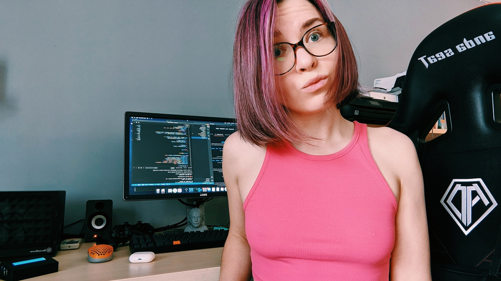

My name is Dina Liubarets, and I am a multi-faceted businesswoman and entrepreneur. I am also a lawyer, and a coder. I completed law school in Ukraine The National University of Ostroh Academy Institute of Law
Since childhood, I have had a strong attraction towards the combination of law and computers, but when I grew up, things did not turn out the way I wanted them to be. It seemed as if I had to choose between law and computing. So, initially, I decided to take law, since I figured a career in computing could be pursued at any age.
After finishing law school in Ukraine, I practiced law for three years. I had to there would be little point in studying law if one was not going to practice it. Anyway, I have to admit that my experience while practicing was pretty rewarding.
I had a mixed outcome. I won some of the cases, and I lost some, but all of them gave me valuable experience and helped to polish and prepare me for the working world. A significant milestone in my life was in 2013, when I decided to move to Canada.
It had already been six years since I had started managing and growing my family business. I had a great deal of responsibility on my shoulders, but my passion for computers sparked again. And this time it was something a lot more specific. I developed an interest in coding websites.
I learned to code, and suddenly this was a passion that I could not ignore. In 2020, I decided to join a 24-week coding boot camp at Carleton University . That experience was so overwhelming for me. I just loved to sit in front of a computer and code and solve a world of problems.
My life had been carrying an empty spot for technology, and coding filled that, and I suddenly felt complete. Tech is now an integral part of my life, and I love to learn new things and experiment. Moreover, it is also very satisfying and comfortable when I'm learning or building new applications or programs.
It has been some years since I decided that the world should know about me and the achievements I've made in life. So, I made an Instagram blog where I share posts and videos regarding my work and life and allow other people to get motivated so they can do something similar.
I also have a passion for exploring the world. Hence, my love for traveling and the need to post on social media get along very well. I adore and appreciate the photos, videos, adventures, and fun that come with my travel. If I was totally honest, I would love to keep this up for the rest of my life.
We cannot deny the fact that fashion is one of the essential parts of social media. What a productive coincidence that fashion is also an essential part of my life, and this sense of fashion allows me to post quality pictures and videos and set new trends for my audience to follow.
After all that I have done in my life and the victories I've won, I can confidently and proudly say that I have good leadership and management skills. I can quickly analyze situations, deduce the possible outcomes and consequences of a decision, and take suitable and appropriate action.
Everyone who has worked with me has learned a lot from me, and the same goes the other way around. I am super engaged in every field of life. Even though all this responsibility is sometimes a great deal to handle, I am very open about myself. This behavior also allows me to have interactive and productive relationships with my coworkers and family members.
Another trait I am proud of is that I can manage time efficiently. I have to admit that the responsibility I took on board from a young age taught me many things, one of which was the value of time. I am ready to welcome new things in my life, but I also do not forget to maintain the importance of the existing ones.
Along with fashion, photography, law, and coding, I also know how to read the stars. I have knowledge of astro psychology and filming, I know criminal law, and I can build websites on both the front and back ends.
I believe that knowing who you are is the foundation for a happy, successful, and fulfilling life.
So much more about me and my life on instagram blog.